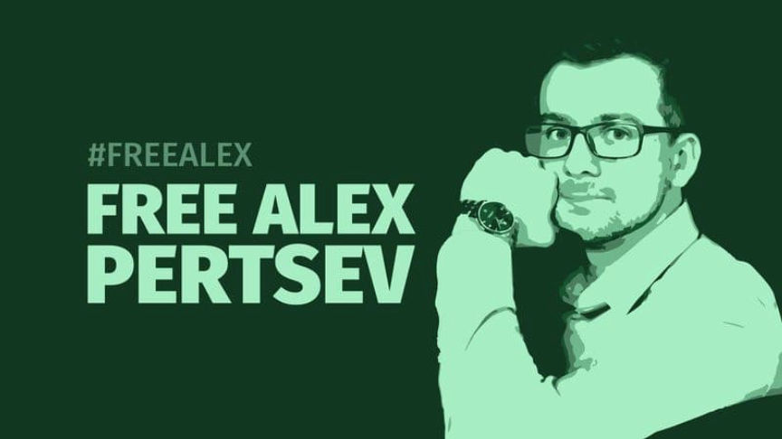
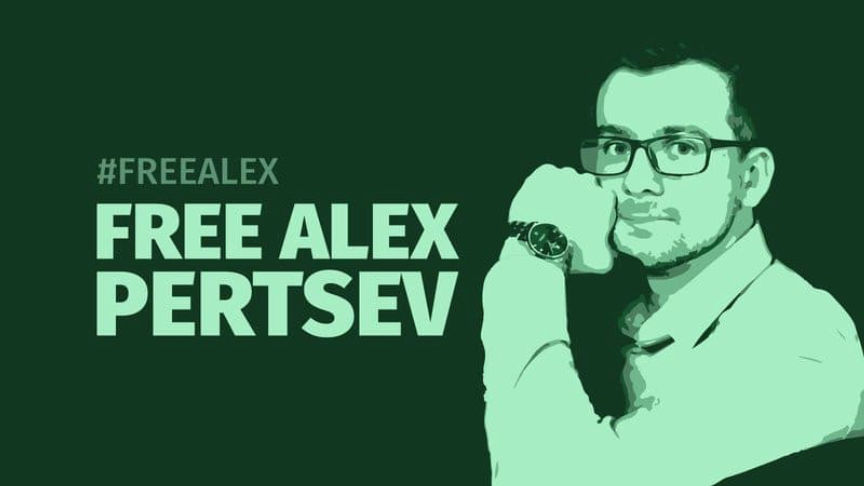

Supporters Launch Campaign to Free the Tornado Cash Dev
~3 min read | Published on 2022-08-23, tagged Tornado-Cash using 648 words.
Members of the cryptocurrency community have launched a campaign calling for the release of the Tornado Cash developer Alexey Pertsev.
On August 10, 2022, the Fiscal Information and Investigation Service (FIOD) in the Netherlands arrested Alexey Pertsev for his “involvement in concealing criminal financial flows and facilitating money laundering through the mixing of cryptocurrencies through the decentralized Ethereum mixing service Tornado Cash.” Authorities have not charged Persev with a crime and can keep him in jail for 110 days without charging him.

At the time of writing, a change.org petition calling for Pertsev’s release has more than 2,300 signatures. At least 50 people joined a protest to spread awareness about Pertsev’s case in Dam Square in Amsterdam on August 20, 2022.
“Blockchain developer Alex pertsev was arrested by the Dutch police in Amsterdam on August 10 and being suspected of creating open-source code that was developed for the Tornado Cash project and was misused for illegal activities by a 3d party, but a developer has no control whatsoever over how their open-source code is subsequently used.”
Who is Alex Pertsev?
“Alexey is a programmer and a professional in the field of information security living in the Netherlands. An active participant in the crypto community. Information security’s primary focus is the balanced protection of the confidentiality, integrity, and availability of data and for him it’s not just words. And as one of the areas of his activity, he was engaged in audits of smart contracts and security issues of the blockchain network.”
Why is it important?
“In our opinion, Alex’s arrest creates a dangerous precedent which could lead to other developers of open source software being prosecuted in case of misuse of these codes.”
“The developer has no control over open source code usage. Just as the manufacturer of kitchen knives is not responsible for domestic murders. The Tornado Cash team has developed a mixing service, but does not manage it — an open source application can be installed and run by any user.”
Included on the setalexfree.nl website are links to the change.org petition and a Telegram group for supporters and fans.
Petition: https://www.change.org/p/open-source-development-is-in-danger-take-action-before-it-s-too-late-opensourcenotacrime-privacynotacrime-freealex-freepertsev-freealekseypertsev
Telegram Group: https://t.me/+0tKJW0Xoolo3M2RiContext
“Last week’s arrest of Amsterdam-based software developer Alex Pertsev threatens to create a dangerous precedent, as developers could now be made responsible if software they created is misused.”
Why is this case so important?
“Open-source software – which was published under free licence and can be used by anyone and for any purpose – has always been a major driver for innovation in the tech sector. Many popular products, such as Linux, Mozilla Firefox and VLC Media Player, were developed as open-source software.”
“Open-source software products have millions of users globally, while thousands of developers use open-source code in their projects. Open-source software is flexible and secure, as it can be audited, fixed and improved by anyone.”
“Now, Alex is being accused of creating open-source code that was used by Tornado Cash, a project under investigation in the US and Europe. But a developer has no control whatsoever over how their open-source code is subsequently used.”
“Therefore, the accusations against Alex threaten to kill the entire open-source software segment. No one will dare to write and publish open-source code, no one will invest in the segment if they could be made responsible for the use of the tool they created by other parties.”
I would be shocked if this campaign influences any government decision. State-sponsored activists seem to be the most and only successful activists. The U.S. is currently discussing potential routes to the developer’s conviction not secretly sponsoring a movement calling for his release. Perhaps there is a lack of incriminating evidence and they will release him. But it will not be the result of a campaign such as the one described in this article. That is simply the reality of the situation.
Set Alex Free | , archive.is
This comment is a good take: #a08372b7
On August 10, 2022, the Fiscal Information and Investigation Service (FIOD) in the Netherlands arrested Alexey Pertsev for his “involvement in concealing criminal financial flows and facilitating money laundering through the mixing of cryptocurrencies through the decentralized Ethereum mixing service Tornado Cash.” Authorities have not charged Persev with a crime and can keep him in jail for 110 days without charging him.

A picture of the developer used by the #FreeAlekseyPertsev campaign
At the time of writing, a change.org petition calling for Pertsev’s release has more than 2,300 signatures. At least 50 people joined a protest to spread awareness about Pertsev’s case in Dam Square in Amsterdam on August 20, 2022.
“Blockchain developer Alex pertsev was arrested by the Dutch police in Amsterdam on August 10 and being suspected of creating open-source code that was developed for the Tornado Cash project and was misused for illegal activities by a 3d party, but a developer has no control whatsoever over how their open-source code is subsequently used.”
Who is Alex Pertsev?
“Alexey is a programmer and a professional in the field of information security living in the Netherlands. An active participant in the crypto community. Information security’s primary focus is the balanced protection of the confidentiality, integrity, and availability of data and for him it’s not just words. And as one of the areas of his activity, he was engaged in audits of smart contracts and security issues of the blockchain network.”
Why is it important?
“In our opinion, Alex’s arrest creates a dangerous precedent which could lead to other developers of open source software being prosecuted in case of misuse of these codes.”
“The developer has no control over open source code usage. Just as the manufacturer of kitchen knives is not responsible for domestic murders. The Tornado Cash team has developed a mixing service, but does not manage it — an open source application can be installed and run by any user.”
Aleksey Pertsev
Included on the setalexfree.nl website are links to the change.org petition and a Telegram group for supporters and fans.
Petition: https://www.change.org/p/open-source-development-is-in-danger-take-action-before-it-s-too-late-opensourcenotacrime-privacynotacrime-freealex-freepertsev-freealekseypertsev
Telegram Group: https://t.me/+0tKJW0Xoolo3M2RiContext
“Last week’s arrest of Amsterdam-based software developer Alex Pertsev threatens to create a dangerous precedent, as developers could now be made responsible if software they created is misused.”
Why is this case so important?
“Open-source software – which was published under free licence and can be used by anyone and for any purpose – has always been a major driver for innovation in the tech sector. Many popular products, such as Linux, Mozilla Firefox and VLC Media Player, were developed as open-source software.”
“Open-source software products have millions of users globally, while thousands of developers use open-source code in their projects. Open-source software is flexible and secure, as it can be audited, fixed and improved by anyone.”
“Now, Alex is being accused of creating open-source code that was used by Tornado Cash, a project under investigation in the US and Europe. But a developer has no control whatsoever over how their open-source code is subsequently used.”
“Therefore, the accusations against Alex threaten to kill the entire open-source software segment. No one will dare to write and publish open-source code, no one will invest in the segment if they could be made responsible for the use of the tool they created by other parties.”
I would be shocked if this campaign influences any government decision. State-sponsored activists seem to be the most and only successful activists. The U.S. is currently discussing potential routes to the developer’s conviction not secretly sponsoring a movement calling for his release. Perhaps there is a lack of incriminating evidence and they will release him. But it will not be the result of a campaign such as the one described in this article. That is simply the reality of the situation.
Set Alex Free | , archive.is
This comment is a good take: #a08372b7